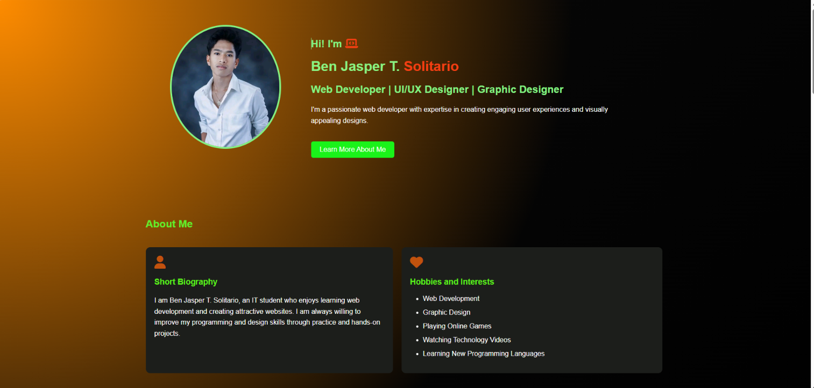
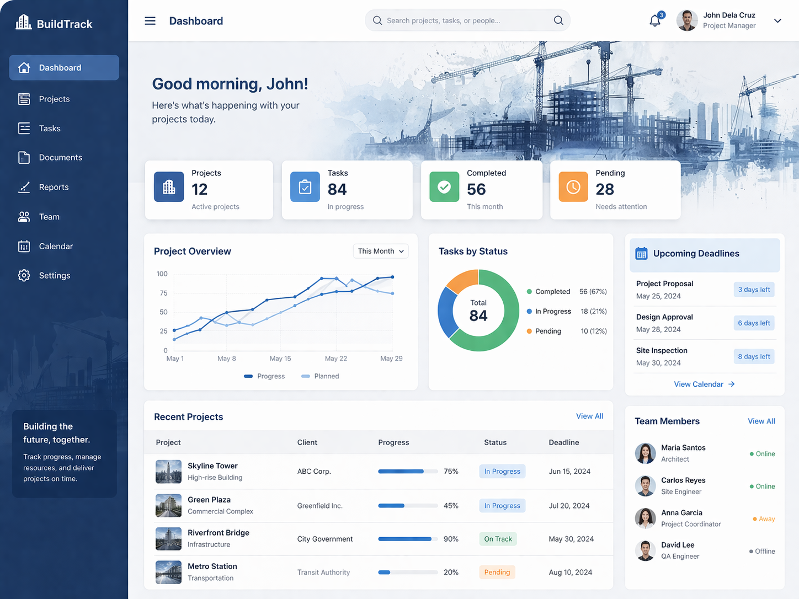

Hi! I'm
Ben Jasper T. Solitario
Web Developer | UI/UX Designer | Graphic Designer
I'm a passionate web developer with expertise in creating engaging user experiences and visually appealing designs.
Learn More About MeI'm a passionate web developer with expertise in creating engaging user experiences and visually appealing designs.
Learn More About MeI am Ben Jasper T. Solitario, an IT student who enjoys learning web development and creating attractive websites. I am always willing to improve my programming and design skills through practice and hands-on projects.
My goal is to become a skilled full-stack web developer, build useful applications, and continuously improve my technical and creative abilities.
I am currently an Information Technology (IT) student. I continue to study programming, web development, databases, and software development while building projects that strengthen my practical skills.

A personal portfolio website that showcases my skills, projects, and contact information.
HTML, CSS, JavaScript
View ProjectA modern responsive portfolio website with animations and interactive design.
HTML, CSS, JavaScript
View Project
A web-based system for employee attendance using QR Code with payroll management.
HTML, CSS, JavaScript, PHP, MySQL
View Project